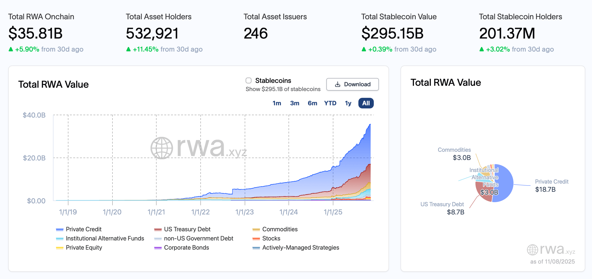
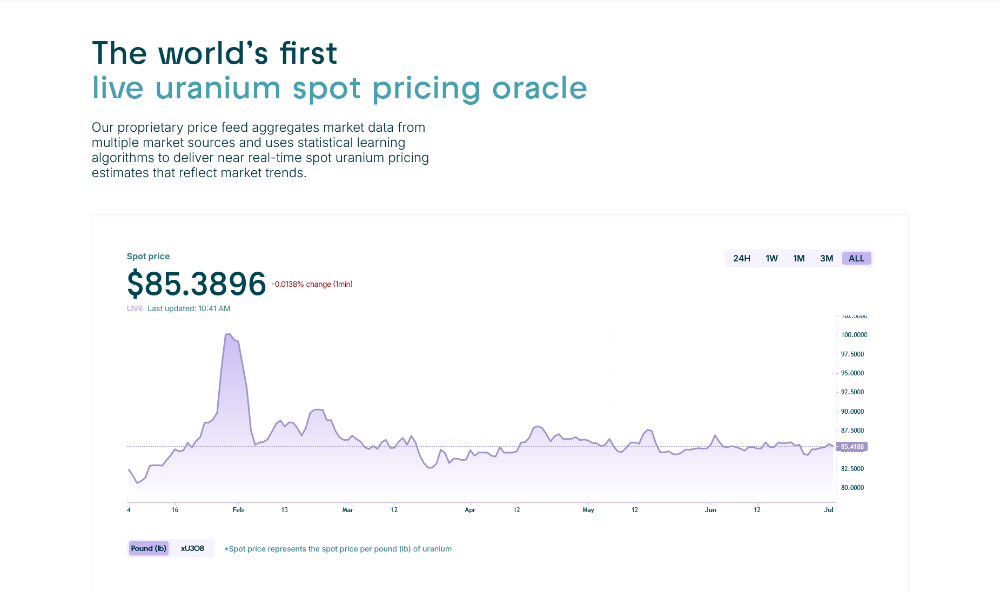

Executive Summary
In response to global macroeconomic energy shocks and accelerating AI-driven power demands, Uranium.io launched as an industry-first MVP to prove market demand for tokenised Uranium on-chain. The project unlocked retail access to a traditionally high-barrier asset class while serving as a high-velocity user acquisition funnel for Etherlink (a Tezos EVM Layer 2 rollup).
Following a successful proof-of-concept, the infrastructure scaled horizontally into Metals.io. This expanded the platform's footprint across a broad suite of macro-narrative commodities, featuring xCo (Tokenised Cobalt) and xNi (Tokenised Nickel), alongside native tokenised Gold (VNXAU) and a specialised Rare Earth basket (RARE).
Problem Statement
Historically, there was no simple way to speculate on uranium pricing within the crypto ecosystem. Traditional commodity trading is plagued by prohibitive frictions: physical uranium trading requires a strict minimum lot size of 50,000 pounds, demanding an investment of approximately $4.2 million per position ($84/lb at time of writing). This multi-million dollar capital gate, combined with complex, opaque OTC onboarding structures, made the asset fairly hostile to retail investors and mid-market allocators alike.
Market Discovery and Validation
Rather than relying on traditional consumer user testing or localised interviews, product validation was driven by an aggressive macroeconomic thesis. Real-World Assets (RWAs) in crypto were expanding exponentially, and our evaluation focused strictly on tracking macroscopic capital demand signals. The strategic bet was simple: marrying an outperforming macro asset with fractionalised on-chain infrastructure would instantly unlock a high-conviction pipeline of digital asset allocators seeking direct commodity exposure without traditional operational or capital friction. Uranium was intentionally selected to anchor the MVP based on two converging market factors:
- Macroeconomic Outperformance: Driven by global energy supply constraints and surging AI data centre power requirements, spot uranium was aggressively outperforming the S&P 500 index.
- Asymmetric Access Barriers: Despite high market demand, traditional market access was locked behind a strict $4.2M OTC minimum lot size.

Physical vs Synthetic
During the initial design phase it was explored wether we should launch as a synthetic derivative tracking the price index (like perpetuals or synthetic pool tokens) or a 100% physically backed asset? It was eventually decided to go for a fully backed, transparently audited physical model for three structural reasons:
- Elimination of Funding Rate Volatility: Synthetics rely on continuous funding rate payments or premium/discount arbitrage pools to maintain their peg. For a highly niche, illiquid spot commodity like uranium, a synthetic model would have exposed retail users to predatory funding fees during structural market expansions.
- Capturing Institutional Allocators: Mid-market funds and institutional macro allocators do not want counterparty smart-contract or liquidation risk associated with derivative pools. They demand direct, beneficial legal ownership of the underlying commodity.
- Solvency & Audit Anchoring: By choosing a 100% physically backed token mapped to physical inventory held in trusted vaults (e.g., Cameco), we eliminated delta risk for the platform and anchored user trust in verified, audited real-world reserves.
Architecture & Operations
[ TOKENS TRADED ON-CHAIN ] ──► Etherlink L2 EVM Rollup (xU3O8, VNXAU, RARE)
│
▼
[ COMPLIANCE / LEGAL ENGINE ] ──► Issuers: VNX (Gold) | Noemon Tech (Rare Earths)
│
▼
[ REAL-WORLD VALUE ANCHOR ] ──► Independent Vaulting & Tier-1 Custody Hubs:
├── Gold: AAA Vaults (Liechtenstein) [Insured]
├── Uranium: Cameco Facilities [Insured]
└── Strategic Metals: Logistics Vaults (Frankfurt) [Insured]
Physical Storage, Logistics, & Supply Chain
As the tokenised assets were physically backed 1:1 there was no user minting process, any new tokens would only be issued by the project once new inventory was acquired and sent to be stored with our regulated partners:
- Cameco & Curzon: Physical uranium ore concentrate (U308 or "yellowcake") backing the xU3O8 token was physically warehoused in highly secure, heavily regulated industrial storage facilities operated by Cameco. Commodity powerhouse Curzon Uranium which has transacted over $1 billion in physical uranium since its inception acted as the OTC broker supplying the physical U308.
- Strategic & Tech Metals Storage: The physical assets backing the platform's broader mineral offerings were centralised across two separate secure European hubs: allocated gold was stored in secure, AAA-rated vaults in Liechtenstein, while strategic high-tech metals were isolated in secure logistics vaults in Frankfurt.
Issuance & Tokenisation
Because the platform acts strictly as an infrastructure layer, the underlying physical assets were not exposed to platform operational risk. Insurance and risk safeguarding were tied directly to the specific legal jurisdictions and institutional partners holding the physical raw materials.
- VNX (Gold Issuance): A European digital asset platform that acted as the legal issuer for the gold portion of the platform (VNXAU). VNX guaranteed that each token corresponded directly to a specific, allocated physical gold bar under strict regulatory standards.
- Noemon Tech (Structured Baskets): An asset manager that structured and issued the platform's proprietary RARE token. Noemon handled the complex index-weighting and compliance architecture for the strategic metals basket, managing financial exposure to critical high-tech elements like hafnium, rhenium, indium, and neodymium oxide.
- Archax (Institutional Custody Wrapper): An FCA-regulated digital asset exchange and broker that Responsible for tokenisation, trustee account setup, and RWA administration and custody via Cameco as U3O8 custodian.
Contract Deployment
The ERC-20 token contract based on OpenZeppelin's ERC1967Proxy.sol contract was deployed on Etherlink. This contract for the xU308 token represented beneficial ownership / fractional shares of the pre-held physical inventory.
The Spot Price Oracle
Because spot uranium U308 does not trade on continuous, hyper-liquid public order books, the on-chain feed is structurally vulnerable to artificial price spikes, illiquid wash trading, and front-running. To protect secondary money markets (like Oku) from bad debt and malicious liquidations when utilising xU308 as collateral, the platform utilises a hybrid oracle model powered by Redstone, integrated off-chain volatility filters, and a API fallback.
[ DATA SOURCES ] ──────────────────────► [ OFF-CHAIN PACKAGING ] ────────────► [ USER TRANSACTION ]
├── Numerco Static Index ├── Median Filter Aggregator ├── User attaches data
├── Mining Equities Proxy ├── 30-Min Rolling TWAP └── Transmits to Etherlink L2
└── Energy ETFs Proxy └── CBOR Compact Encryption
│
▼
[ SMART CONTRACT EXECUTION FLOW ] ───────────────────────────────────────────────────┘
├── Unpacks Redstone Payload
└── Staleness Check (Timestamp > 15 Mins?)
├── [ NO ] ──► Verify Cryptographic Signatures ──► Execute Swap/Borrow (Normal Path)
└── [ YES ] ──► Trigger Circuit Breaker ──────────► Query Oracle Fallback API (Backup Path)

Volatility Dampening & Circuit Breakers
To prevent flash crashes or short-term pricing anomalies from forcing erroneous liquidations, uranium pricing is processed through a three-stage filter before it ever hits the blockchain:
- Multi-Proxy Median Aggregator: The off-chain engine ingests periodic static prints from price reporting agencies like Numerco and combines them with real-time proxy data (including uranium mining equities, energy ETFs, and natural gas/crude) to calculate a continuous fair-value estimate.
- Time-Weighted Average Price (TWAP): Short-term spot market anomalies are smoothed using a rolling 30-minute TWAP window computed off-chain by the oracle nodes. This removes momentary transaction noise while mirroring macro-structural trends.
- On-Chain Circuit Breakers: The consuming smart contracts enforce hard boundary caps. If an incoming price packet deviates by more than 5% within a single block compared to the previous state, the contract instantly triggers a cooldown window or routes execution directly to the Oracle Fallback API.
Fallback API
If RedStone data delivery fails, nodes become unresponsive, or the returned data fails timestamp validation (i.e., the data is older than 15 minutes), the smart contract activates a circuit breaker and switches execution tracks:
- Automated Redirection: The contract automatically rejects the stale payload and redirects execution calls to a secondary, dedicated oracle fallback architecture.
- NAV-Implied Data Sourcing: This fallback is anchored by a model-derived spot estimator based on the Sprott Physical Uranium Trust (TSX: U.UN / OTC: SRUUF). Because the trust holds physical $U_3O_8$ reserves, the system programmatically derives a daily implied spot price by cross-referencing Sprott's unit market price, reported Net Asset Value (NAV), and physical holdings per unit.
- Systemic Protection: his mathematical proxy ensures that even during total external price reporting network outages, user positions cannot be liquidated based on broken data, and trading pools remain operational with hard-anchored pricing.
Decentralised Trading & KYC
To maximise trading and lower the barrier to entry, the platform decoupled speculative trading from physical asset interaction:
- Permissionless Speculation: Retail and institutional users looking purely to trade, hedge, or speculate on the price of assets did not require KYC/AML onboarding. They only needed to connect an EVM-compatible wallet (such as MetaMask) supporting the Etherlink network to interact with our front end trading UI or any other protocol with access to a supported Liquidity Pool.
- Issuance and Redemption: Full identity verification, corporate onboarding and KYC/AML checks were enforced only for users seeking to deposit physical assets onto the platform to be tokenised, or those initiating physical settlement.
Physical Redemption
While financial exposure remained entirely permissionless on-chain, physical redemption was restricted to a manual, highly gated out-of-band request. To satisfy this request and adhere with strict international nuclear asset regulations, an applicant had to satisfy rigorous prerequisites:
- Compliance: Successful completion of the localised KYC/AML, corporate onboarding, and financial appropriateness checks.
- Regulatory Eligibility: The applicant must be a licensed industrial end-user, utility, or approved commodity trader with valid regulatory authorisation to handle nuclear materials.
- Vault Infrastructure: The applicant must hold an active, verified account at an approved, licensed conversion or warehousing facility (e.g., Cameco) capable of receiving hazardous material transfers.
- Commercial Minimums: Deliveries were subject to commercial minimum delivery sizes (multi-ton lots), ensuring that fractional retail positions could only exit by selling their tokens.
Exchanges & Liquidity
To attract external capital without fragmenting the underlying asset across other chains, we partnered with Li.Fi for the liquidity pools and cross chain trading. By embedding EVM-to-EVM cross-chain routing users could swap USDC from external networks seamlessly into the native Etherlink xU3O8 pools. Additionally, in co-ordination with BD teams the project worked directly with centralised exchanges to get xU3O8 listed for active trading.
Business Outcomes
- The First Uranium Oracle: We launched launch the world's first live, model-derived on-chain oracle for U308 spot pricing.
- Ecosystem Velocity: Delivered an operational growth funnel for Etherlink, capturing cross-chain EVM liquidity via bridge integrations and keeping the asset anchored to the home chain to drive TVL.
- Unlocking Capital Efficiency: Integrated the token primitives into secondary DeFi money markets on Etherlink. This allows users to utilise xU3O8 as an on-chain collateral asset to borrow USDC via Morpho Blue's isolated lending vaults (accessed via the Oku frontend). By leveraging Morpho’s isolated risk parameters (1 collateral, 1 borrow asset), the protocol unlocks deep liquidity for holders without exposing lenders to shared-pool contagion or forcing a taxable sale of the underlying asset.
- Modular Infrastructure Reusability: Scaled horizontally from a single-asset MVP (Uranium.io) to a multi-asset commodity platform (Metals.io). When market narratives shifted, the platform rapidly deployed supported asset primitives like xCo and xNi without rewriting the core compliance, registry, or tokenisation smart contracts.
- TradFi Capital: In a strategic move to capture mainstream institutional capital and expand beyond crypto-native rails, registration filings were filed with the SEC for a Metals.io Uranium ETF. This ongoing regulatory initialisation represents a major pivot toward wrapping on-chain commodity supply chains into legacy TradFi exchange vehicles.
Key Takeaways
- The Liquidity-Exclusivity Trap: Keeping these commodity assets exclusive to Etherlink effectively served the ecosystem goal of driving native L2 TVL, but it capped the absolute growth ceiling of the product. In hindsight cross-chain issuance could have tapped into deeper user numbers and liquidity on Ethereum, potentially 5x-ing absolute TVL, though at the expense of Etherlink exclusivity.
- Modular Scalability: Designing compliance, onboarding, and custody rails as independent, modular components allows a Web3 platform to switch or add underlying asset classes (from uranium to rare earth metals) seamlessly in response to shifting macroeconomic trends.